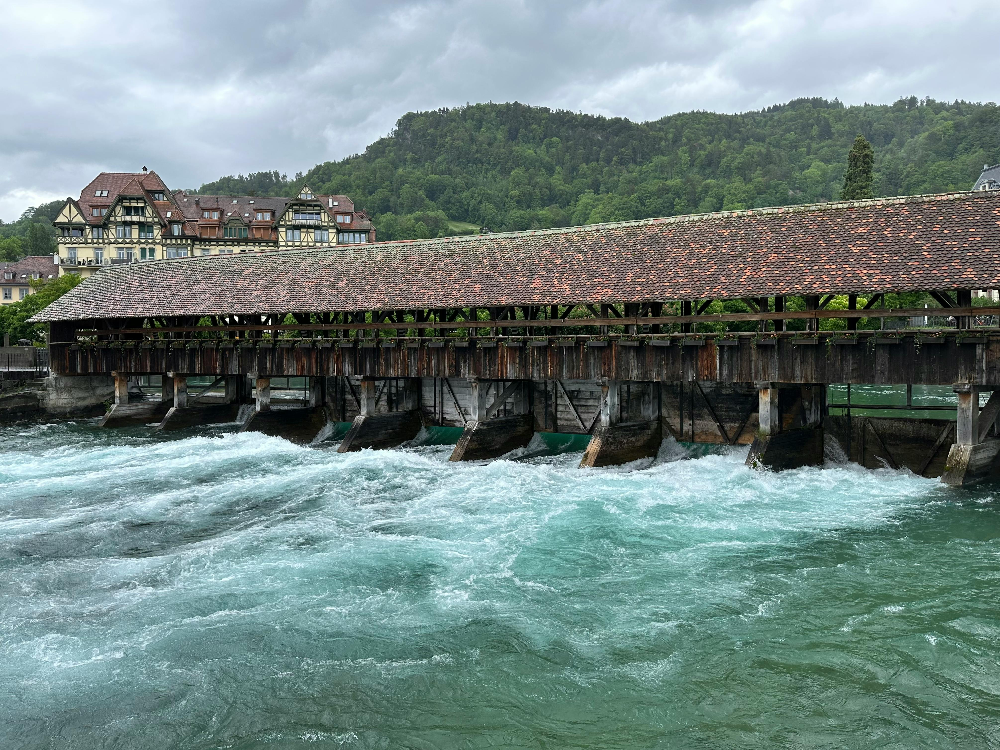
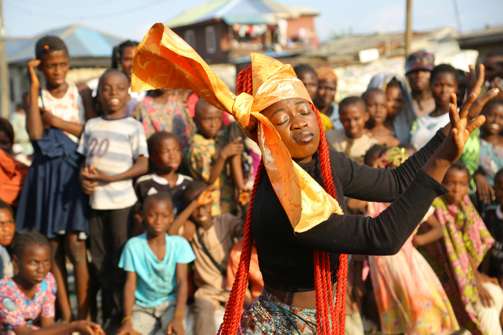
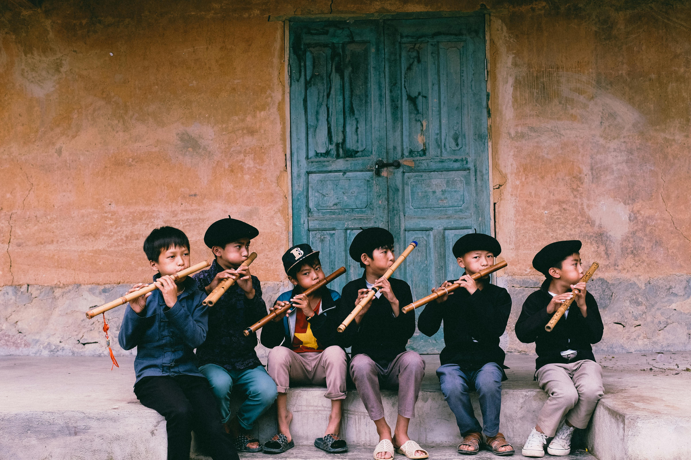
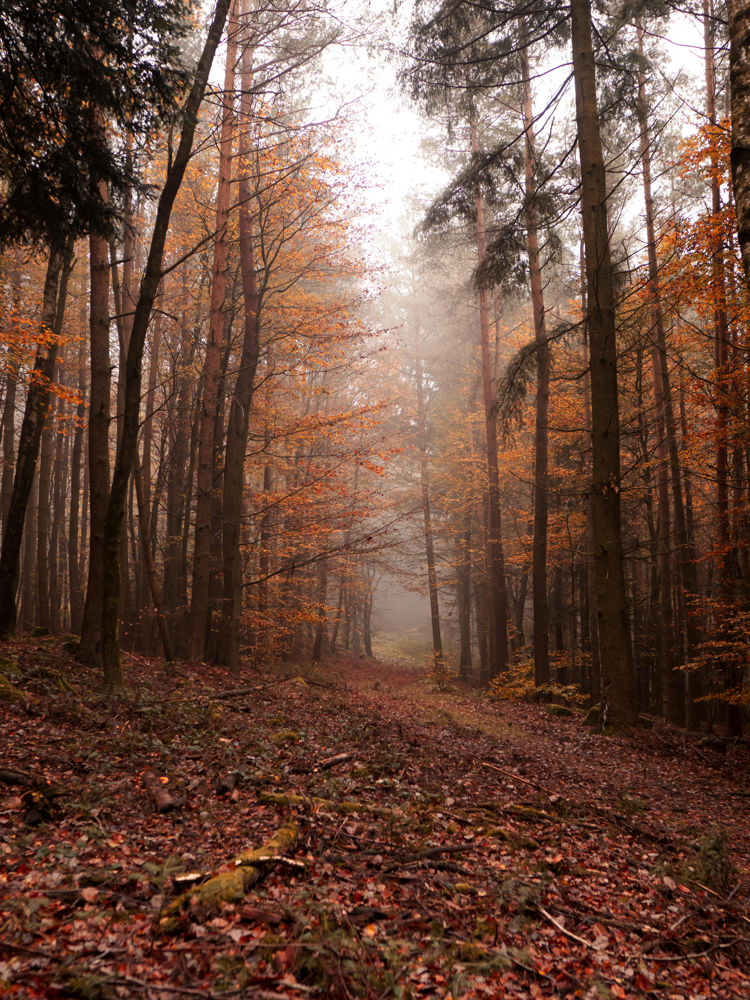

What Makes Sabor Village Special
Sabor Village is more than beauty — it’s energy, talent, and vibrant community life. Explore some of our top attractions:
- Annual Tournaments: Every year we host tournaments that draw people from near and far. These events stir excitement — sports, skill competitions, and cheering crowds — all in the spirit of friendly competition and community pride.
- Hydro Dam & Electric Generation: We have a major dam nearby that generates electricity, powering homes, farms, and helping sustain local growth. It’s a source of pride and resource for all of us. 
- Talented Youth Performers: Our young dancers and performers have become well-known — they dance, entertain in gatherings, and represent Sabor Village with joy and creativity.  
- Forest & Natural Scenery: Wander the great forests surrounding Rangwe. These green spaces are places of peace, study, nature walks, and inspiration. 